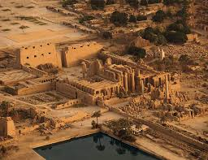
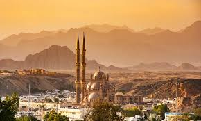
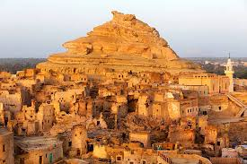

1. The Pyramids and Sphinx – Giza
The Pyramids of Giza and the Great Sphinx are among the most iconic wonders of the ancient world. These colossal structures showcase the brilliance of ancient Egyptian engineering. Visitors can explore their rich history and capture breathtaking photos in front of these legendary monuments.

2. Karnak Temple – Luxor
Karnak Temple is one of the largest religious complexes in the world, featuring massive columns, obelisks, and intricate hieroglyphs. It is a must-visit destination in Luxor for history enthusiasts and archaeology lovers.

3. The Red Sea – Sharm El Sheikh
Sharm El Sheikh is a paradise for diving and water sports lovers. With its crystal-clear waters and vibrant coral reefs, it offers an unforgettable underwater experience. Visitors can also enjoy desert safaris and relax on its stunning beaches.

4. Siwa Oasis – Western Desert
Siwa Oasis is a hidden gem, offering breathtaking landscapes, salt lakes, and natural hot springs like Cleopatra’s Bath. It provides a peaceful escape where visitors can experience the beauty of the desert and the rich Bedouin culture.

5. Abu Simbel Temple – Aswan
Abu Simbel Temple, built by Pharaoh Ramses II, is an architectural masterpiece carved into the rock. It is famous for the sun alignment phenomenon, where the sun illuminates the temple’s inner sanctum twice a year, attracting visitors from around the world.

6. Alexandria – The Pearl of the Mediterranean
Alexandria blends rich history with a modern atmosphere. Visitors can explore the Bibliotheca Alexandrina, the historic Qaitbay Citadel, and the beautiful seafront promenade. The city is perfect for those who love culture and coastal charm.